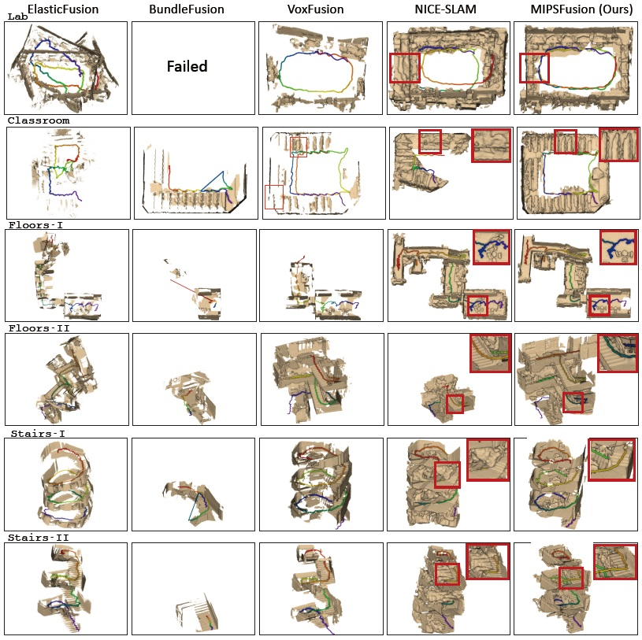

MIPS-Fusion: Multi-Implicit-Submaps for Scalable and Robust Online Neural RGB-D Reconstruction
Yijie Tang, Jiazhao Zhang, Zhinan Yu, He Wang, Kai Xu*
ACM Transactions
on Graphics (SIGGRAPH 2023), 42(6)
We introduce MIPS-Fusion, an online RGB-D reconstruction based on a novel neural implicit representation – multi-implicit-submap. Neural submaps are allocated incrementally alongside the scanning trajectory, learned efficiently with local bundle adjustment, refined distributively with back-end optimization, and optimized globally with loop closure. The divide-and-conquer scheme attains both flexibility and scalability. We also propose a hybrid tracking approach where randomized optimization is made possible in the neural setting, enabling efficient and robust tracking even under fast camera motions.
|
Abstract
|
We introduce MIPS-Fusion, a robust and scalable online RGB-D reconstruc- tion method based on a novel neural implicit representation – multi-implicit- submap. Different from existing neural RGB-D reconstruction methods lack- ing either flexibility with a single neural map or scalability due to extra storage of feature grids, we propose a pure neural representation tackling both difficulties with a divide-and-conquer design. In our method, neural submaps are incrementally allocated alongside the scanning trajectory and efficiently learned with local neural bundle adjustments. The submaps can be refined individually in a back-end optimization and optimized jointly to realize submap-level loop closure. Meanwhile, we propose a hybrid tracking approach combining randomized and gradient-based pose optimizations. For the first time, randomized optimization is made possible in neural track- ing with several key designs to the learning process, enabling efficient and robust tracking even under fast camera motions. The extensive evaluation demonstrates that our method attains higher reconstruction quality than the state of the arts for large-scale scenes and under fast camera motions.
|
|
|
Paper |
|
|
|
Slides |
|
|
|
Video |
|
|
| Images |
Method overview. Our method is comprised of online reconstruction of active submap based on neural tracking and mapping and back-end optimization over all inactive submaps based on intra-submap refinement and and inter-submap registration. The latter facilitates submap-level loop closure.

Comparison of 3D reconstruction results by NICE-SLAM, Vox-Fusion, and our MIPS-Fusion over six scenes from the FastCaMo-Real and ScanNet datasets. The last column gives the ground-truth reconstructions obtained by traditional/offline methods. Our method achieves better accuracy and completeness compared to the alternatives.
Rendering results of ours and NICE-SLAM on the sequences of FastCaMo-Large (rows 1-2), ScanNet (row 3), and FastCaMo-Synth (row 4).
|
|
|
| Thanks |
We thank the anonymous reviewers for their valuable comments and suggestions. This work was supported in part by National Key Research and Development Program of China (2018AAA0102200) and NSFC (62325211, 62132021).
|
|
|
Code
Data |
The GitHub repository hosting the full source code and dataset.
|
|
|
| Bibtex |
@article
{tang_siga23,
title = {MIPS-Fusion: Multi-Implicit-Submaps for Scalable and Robust Online Neural RGB-D Reconstruction},
author
= {Yijie Tang and Jiazhao Zhang and Zhinan Yu and He Wang and Kai Xu},
journal
= {ACM Transactions on Graphics},
volume
= {42},
number
= {6},
year
= {2023}
}
|
 
|
|